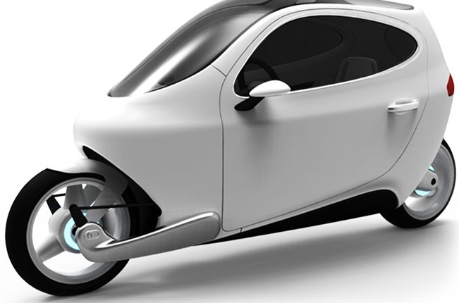

A self balancing bike, basically some attractive facts or information
about the bike.

Bikes are mostly used for transportation within the same city
and these are the most widely used and preferred way for
transportation for short distance movement.
"GYROBIKE REINVENTS THE TRAINING WHEEL!"
aims to replace traditional
training wheels or stabilizers and to eradicate
the bad habits that they teach kids when learning
to ride a bike - leaning away from a turn and
constantly putting a foot down at the
first sign of a wobble when they're eventually
It aims to replace traditional training wheels or stabilizers
and to eradicate the bad habits that they teach kids when learning to ride a bike -
leaning away from a turn and constantly putting a foot down at the first sign of a
wobble when they're eventually taken off. The Gyrowheel uses the "gyroscopic precession"
of the independently spinning disk inside it to stabilize the bike. The force created
when the disk is turned - via a rechargeable battery - is powerful enough to hold a wheel
upright at very low speeds (i.e. virtually stopped), and can actually make a bike look
like it has a "Ghost Rider" as the videos below show (and there are plenty more on the Gyrobike site)
taken off